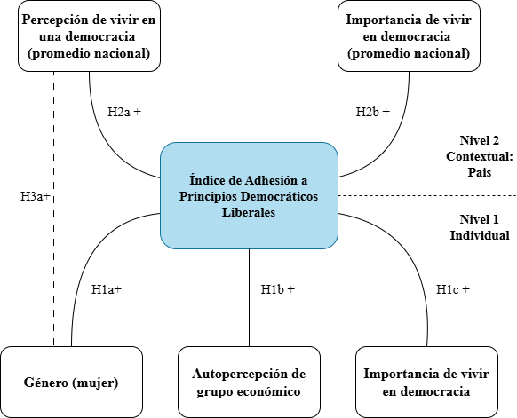
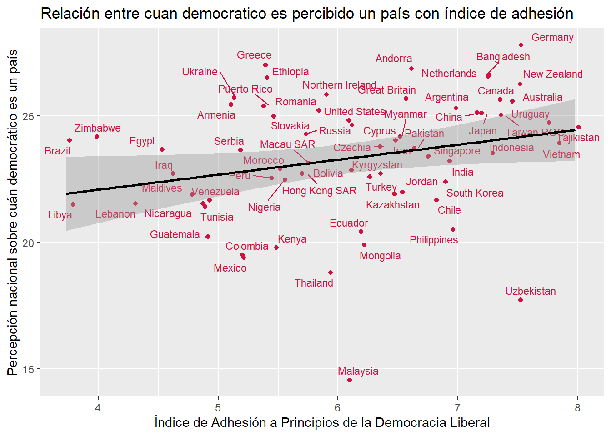
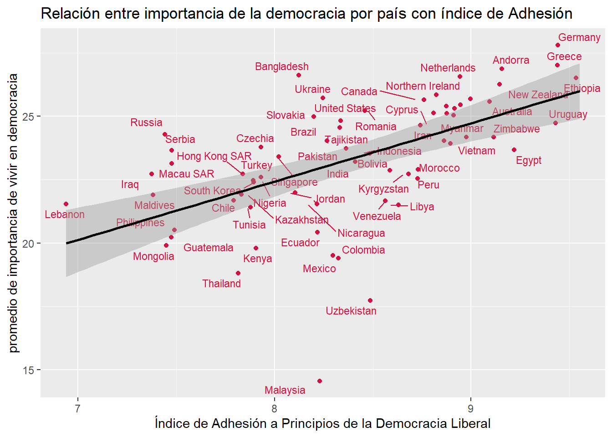
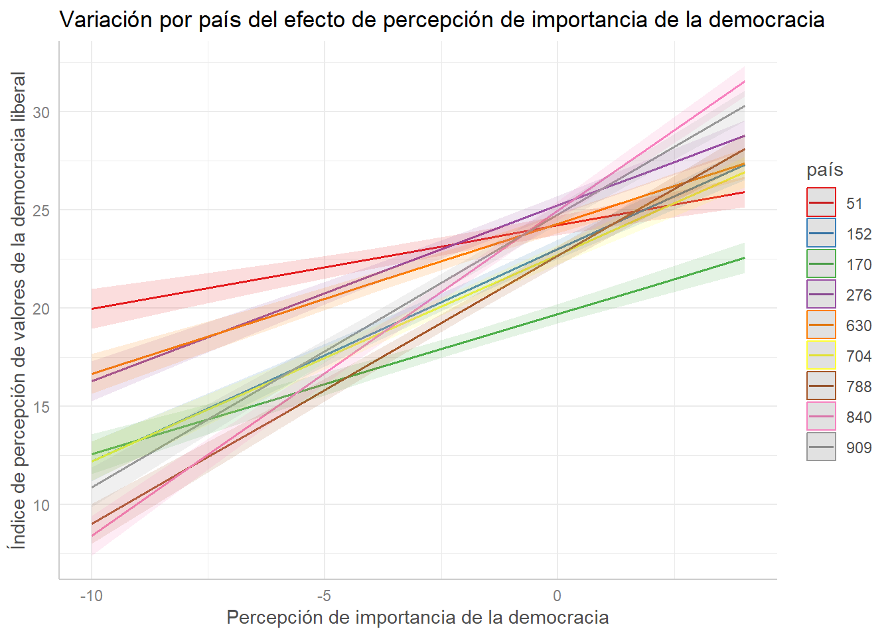
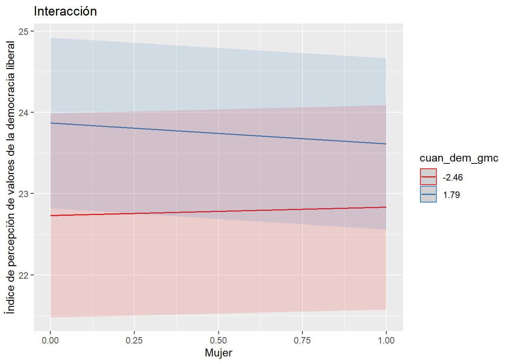
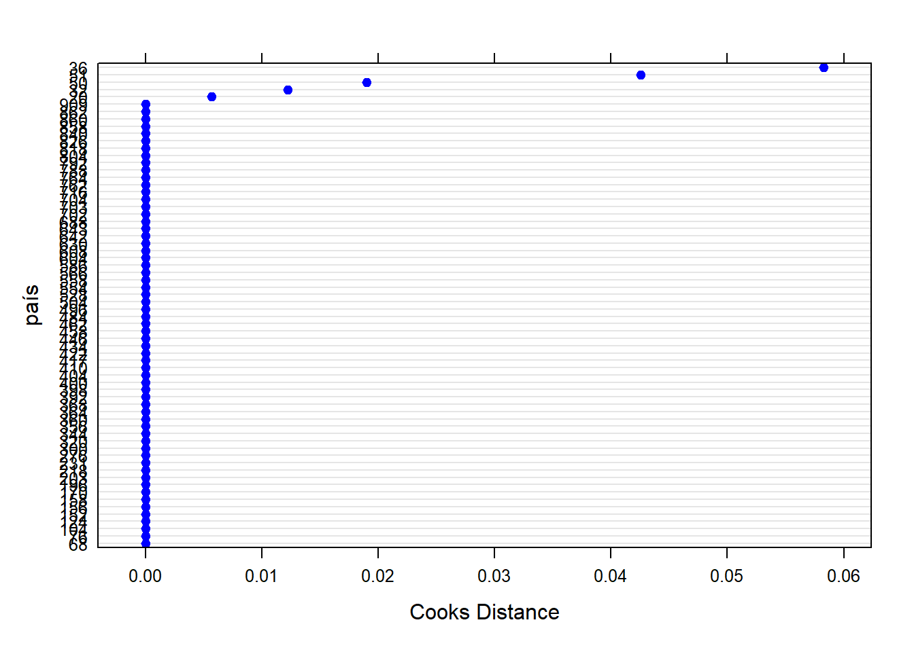
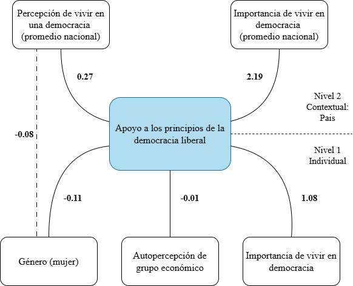

Adhesión a principios democráticos liberales: entre las percepciones individuales y los contextos nacionales
Análisis de datos multinivel 2025
1 Abstract
Este estudio analiza cómo inciden las percepciones individuales y los climas democráticos nacionales en el respaldo ciudadano a los principios fundamentales de la democracia liberal, como los derechos civiles, la equidad de género y la soberanía popular. La pregunta de investigación se orienta a comprender cómo factores subjetivos y contextuales interactúan para explicar la adhesión normativa a dichos principios. Utilizando datos de la séptima ola del World Values Survey (2017–2022), con una muestra de 88.207 personas en 66 países, se estimaron modelos multinivel que permiten capturar la varianza entre y dentro de los países. El índice de adhesión a la democracia liberal fue construido a partir de tres dimensiones: elecciones libres, derechos civiles y equidad de género. Los resultados indican que tanto la importancia atribuida a vivir en democracia a nivel individual (β ≈ 1.08) como su promedio nacional (β ≈ 1.11) tienen efectos positivos y significativos sobre el respaldo a la democracia liberal. En cambio, el género y la autopercepción económica no mostraron efectos sustantivos. Se concluye que las actitudes democráticas están fuertemente influidas por contextos nacionales, lo que refuerza la utilidad del enfoque multinivel para comprender la cultura política en perspectiva comparada.
2 Introducción
Durante la última década, la democracia liberal ha enfrentado múltiples tensiones a nivel global. Pese a que muchos países mantienen formalmente estructuras como elecciones libres, división de poderes y garantías civiles, diversos estudios han evidenciado una creciente insatisfacción ciudadana con el funcionamiento efectivo de los sistemas democráticos, incluso en contextos donde formalmente se mantienen principios como la división de poderes, las elecciones libres o la garantía de derechos civiles (Wike, Silver & Castillo, 2019). Esta paradoja - entre la vigencia normativa de la democracia liberal y su desafección pública - constituye un problema de investigación relevante para las ciencias sociales, ya que pone en cuestión el grado de adhesión sustantiva de la ciudadanía a los principios que estructuran dicho régimen político.
Desde una perspectiva sociológica, el problema se aborda como una tensión entre estructuras normativas y disposiciones subjetivas. Autores como Almond y Verba (1963) entienden la cultura política como un conjunto de orientaciones subjetivas —cognitivas, afectivas y valorativas— hacia el sistema político. Esta noción permite vincular la percepción individual con la legitimidad y estabilidad de los regímenes democráticos, lo que permite preguntarse acerca de cómo distintos tipos de cultura política condicionan la participación democrática y el respaldo a sus principios fundamentales. Inglehart y Welzel (2005b), por su parte, plantean que los valores de autoexpresión y autonomía son claves para el sostén de regímenes democráticos liberales; estos valores se fortalecen en contextos donde los recursos materiales están asegurados y donde la cultura favorece la autoexpresión individual, reforzando el respaldo a la democracia liberal desde una base cultural más profunda. Así, el objeto de estudio de esta investigación son las actitudes ciudadanas frente a los principios fundamentales de la democracia liberal: derechos civiles, igualdad política y límites al poder.
Desde este enfoque, es posible plantear que la percepción subjetiva de vivir en una democracia —así como la valoración que se le atribuye a esta forma de gobierno— actúan como catalizadoresdel respaldo a los principios de la democracia liberal. Esto sugiere una doble dimensión del fenómeno: por un lado, el efecto de la interiorización de valores democráticos en los individuos; y por otro, la influencia del contexto nacional, que puede reforzar o debilitar dicha interiorización. Tal como lo expone la evidencia empírica recogida por Welzel e Inglehart (2005a), las aspiraciones masivas de libertad tienen una capacidad explicativa superior a otras variables estructurales, como el PIB per cápita o el capital social, al analizar el proceso de democratización y su sostenibilidad en el tiempo.
Hasta ahora, buena parte de los estudios comparados han priorizado modelos que se concentran en variables individuales o análisis agregados por país. Esta fragmentación limita la comprensión de cómo el contexto democrático nacional interactúa con las disposiciones individuales. Esta investigación propone superar esta brecha mediante un enfoque multinivel que evalúa simultáneamente el efecto de percepciones individuales (como la importancia atribuida a vivir en democracia) y del clima democrático nacional sobre el respaldo a los valores liberales. Por tanto, se plantea como pregunta de investigación: ¿Cómo inciden las percepciones individuales y los climas democráticos nacionales en el respaldo ciudadano a los principios de la democracia liberal?
Además del foco en la valoración individual de la democracia, se consideran otras dimensiones relevantes como el género y la autopercepción económica. Estudios previos han mostrado que las mujeres suelen presentar actitudes más favorables hacia la equidad y los derechos civiles, mientras que el estatus socioeconómico puede modular la relación entre cultura política y respaldo democrático (Alexander & Welzel, 2011). Del mismo modo, se espera que un mayor consenso contextual respecto a la democracia refuerce las creencias individuales, operando como un mecanismo simbólico de legitimación.
La investigación se basa en datos de la séptima ola del World Values Survey (2017-2022), con una muestra de 88.207 personas en 66 países. La estructura jerárquica de la base de datos permite estimar modelos multinivel que capturen variación entre y dentro de países. Esta estructura jerárquica —personas anidadas dentro de países— justifica plenamente el uso de modelos multinivel, los cuales permiten incorporar predictores en ambos niveles y modelar adecuadamente la variabilidad entre y dentro de los contextos nacionales (Goldstein, 1995; Finch et al., 2014). De este modo, el estudio busca aportar a la literatura sobre cultura política, incorporando un marco teórico-metodológico que articula agencia, estructura y legitimidad democrática.
La variable dependiente del estudio es un índice ad hoc sobre principios de la democracia liberal, que considera dimensiones como la soberanía popular (elecciones libres), la igualdad de género en derechos civiles, y la protección de los derechos individuales frente al Estado. A diferencia de otras medidas más abstractas, este índice operacionaliza la adhesión empírica y evaluativa a principios normativos fundamentales, permitiendo distinguir entre un respaldo retórico a la democracia y un compromiso con sus valores liberales sustantivos (Bellino, 2017; Kong, 2024; Lee, 2024).
Metodológicamente, se sigue una estrategia escalonada. En primer lugar, se estima un modelo nulo sin predictores para evaluar la existencia de varianza significativa entre países. La correlación intraclase (ICC = 0.1489) indica que aproximadamente el 15% de la varianza total del índice depende de diferencias entre contextos nacionales, lo cual valida empíricamente la pertinencia de un enfoque multinivel.
Se estiman modelos multinivel separados a nivel individual (nivel 1) y contextual (nivel 2), los cuales permiten una primera exploración del efecto de las variables incluidas. Sin embargo, al no considerar la estructura anidada de los datos, estos modelos pueden subestimar los errores estándar, inflar falsos positivos y limitar la interpretación de los efectos contextuales (Goldstein, 1995; Finch et al., 2014). Por ello, se procede a la estimación de modelos multinivel con interceptos aleatorios por país, incorporando simultáneamente predictores individuales como el género, la autopercepción socioeconómica y la importancia atribuida a vivir en democracia, junto con predictores contextuales como la percepción media del país sobre la democracia y la valoración promedio de su importancia.
En el modelo multinivel combinado, se observa que las variables “ser mujer” y “autopercepción económica” presentan efectos estadísticamente significativos. Ademas, tanto la “importancia atribuida a vivir en democracia” (coef. ≈ 1.08) como su promedio nacional (coef. ≈ 1.11) tienen efectos positivos y significativos, respaldando las hipótesis H1b y H2b. Esto sugiere que tanto las disposiciones individuales como los climas democráticos nacionales inciden de manera complementaria en el respaldo a principios democráticos liberales.sse estima un modelo con efectos aleatorios en la pendiente de la variable “importancia atribuida a vivir en democracia”, el cual mejora el ajuste general y explica un 3% adicional de la varianza. Si bien en este modelo la variable de autopercepción económica alcanza significancia estadística, su coeficiente es mínimo (≈ -0.02), por lo que se considera irrelevante desde el punto de vista sustantivo. Además, los resultados sugieren un efecto de compensación contextual: en países con mayor adhesión promedio a los principios democráticos, el efecto individual de la importancia atribuida a vivir en democracia tiende a disminuir.
En conjunto, los resultados refuerzan la utilidad del enfoque multinivel para capturar de manera robusta tanto la variabilidad individual como contextual. Esta estrategia metodológica permite una comprensión más profunda y matizada de cómo se configuran las actitudes hacia la democracia liberal, y ha sido validada en investigaciones comparativas recientes (Ariely & Davidov, 2011; Kong, 2024).
3 Antecedentes
Desde las investigaciones sociológicas, la cultura política ha sido definida como el conjunto de orientaciones cognitivas, afectivas y valorativas de los ciudadanos hacia su sistema político (Almond & Verba, 1963). Este concepto permite explorar cómo las actitudes subjetivas configuran la legitimidad y estabilidad de los regímenes democráticos. Inglehart y Welzel (2005) extienden esta línea argumental al señalar que el respaldo a la democracia liberal depende de la presencia de valores de autoexpresión y emancipación. Estos valores se desarrollan en contextos con recursos asegurados y climas favorables a la autonomía individual, operando como base cultural profunda del régimen liberal.
La democracia liberal se entiende como un régimen que combina soberanía popular con límites institucionales al poder del Estado, respeto por los derechos individuales y equidad política entre ciudadanos (Offe, 2011). No obstante, su legitimidad ha sido históricamente restringida hacia mujeres y grupos subalternos (Córdoba Gómez, 2008). Por tanto, estudiar su respaldo desde una perspectiva ciudadana exige también considerar sus fronteras normativas, estructurales e históricas.
Las percepciones individuales tienen un papel central en el respaldo a la democracia liberal. Una variable clave es la importancia atribuida a vivir en democracia, la cual ha demostrado ser un indicador robusto del compromiso normativo con el régimen (Welzel & Inglehart, 2005a). También se consideran el género y la autopercepción económica. En promedio, las mujeres presentan actitudes más igualitarias y proclives a la defensa de los derechos civiles (Alexander & Welzel, 2011). Respecto al estatus socioeconómico, su influencia es más ambigua: podría fomentar valores de competencia individual o, por el contrario, reforzar demandas redistributivas en sectores medios.
Además de los factores individuales, este estudio incorpora variables contextuales que capturan el clima democrático nacional: percepción promedio de vivir en democracia e importancia atribuida a la democracia en cada país. Siguiendo a Welzel e Inglehart (2005), estos climas actúan como entornos simbólicos que refuerzan o debilitan las disposiciones individuales. En países con alta valoración democrática, se espera que el respaldo a los principios liberales sea mayor debido a procesos de socialización política más intensos. Desde esta perspectiva, la cultura política se entiende no como un agregado de actitudes individuales, sino como una estructura de sentido compartido (Castro Domingo, 2011).
En suma, este estudio busca aportar no sólo al conocimiento académico, sino también al debate público y político sobre la crisis de legitimidad democrática en distintas partes del mundo. Comprender cómo se configura el respaldo a la democracia liberal desde la interacción entre estructuras y agencia —entre contextos nacionales e historias individuales— es clave para pensar alternativas institucionales y culturales que fortalezcan la vida democrática. En este sentido, la perspectiva sociológica resulta particularmente pertinente, al ofrecer herramientas conceptuales y metodológicas para analizar la complejidad de los vínculos entre subjetividad, cultura política e instituciones.
4 Objetivos e hipótesis
4.1 Objetivo general
Analizar cómo inciden las percepciones individuales y los climas democráticos nacionales en el apoyo ciudadano a los principios fundamentales de la democracia liberal a nivel mundial.
4.2 Objetivos específicos
Analizar si existen diferencias de género en el respaldo a los principios de la democracia liberal.
Examinar si la valoración individual de la democracia se asocia con un mayor respaldo a los principios de la democracia liberal.
Explorar si la autopercepción de pertenencia a un nivel socioeconómico alto se relaciona con un mayor respaldo a los principios de la democracia liberal.
Evaluar si, en los países donde las personas perciben que viven en un régimen democrático, se observa un mayor respaldo promedio a los principios de la democracia liberal.
Determinar si, en los países donde la ciudadanía otorga mayor importancia a vivir en democracia, se observa un mayor respaldo promedio a los principios de la democracia liberal.
4.3 Hipótesis
4.3.1 Nivel 1 – Individual
\(H_1a\) (alternativa): Las mujeres presentan un mayor respaldo a los principios de la democracia liberal que los hombres.
\(H0_1a\) (nula): No existen diferencias significativas en el respaldo a los principios de la democracia liberal entre hombres y mujeres.
\(H_1b\) (alternativa): Las personas que se perciben en una mejor situación económica presentan un mayor respaldo a los principios de la democracia liberal.
\(H0_1b\) (nula): La autopercepción de mejor situación económica no se asocia con un mayor respaldo a los principios de la democracia liberal.
\(H_1c\) (alternativa): Las personas que valoran positivamente la democracia presentan un mayor respaldo a los principios de la democracia liberal.
\(H0_1c\) (nula): Valorar positivamente vivir en democracia no se asocia con un mayor respaldo a los principios de la democracia liberal.
4.3.2 Nivel 2 – Contextual
\(H_2a\) (alternativa): Los países en los que la ciudadanía percibe que viven en una democracia presentan un mayor respaldo promedio a los principios de la democracia liberal.
\(H0_2a\) (nula): La percepción de vivir en una democracia no se asocia con un mayor respaldo promedio a los principios de la democracia liberal.
\(H_2b\) (alternativa): Los países donde las personas valoran más vivir en democracia presentan un mayor respaldo promedio a los principios de la democracia liberal.
\(H0_2b\) (nula): La valoración promedio de vivir en democracia no se asocia con un mayor respaldo a los principios de la democracia liberal.
4.3.3 Interacción
\(H_3a\) (alternativa): El efecto positivo del género (a favor de las mujeres) sobre el respaldo a los principios de la democracia liberal es más intenso a medida que el país sea percibido más democrático.
\(H0_3a\) (nula): El efecto del género sobre el respaldo a los principios de democracia liberal no se relacionan de manera significativa con la medida en que el país sea percibido como más democrático.
Modelo teórico con hipótesis

5 Datos, variables y métodos
Se utilizó la base de datos de la séptima ola del World Values Survey (2017–2022), compuesta por 88.207 casos en 66 países. La estructura jerárquica de la base (individuos anidados en países) permite el uso de modelos multinivel. Se eliminaron casos con datos faltantes y se construyó un índice compuesto que captura percepciones sobre tres principios fundamentales de la democracia liberal: soberanía popular, protección de derechos civiles e igualdad de género.
5.1 Variables
La variable dependiente es el Índice de Percepción sobre Principios de Democracia Liberal (rango: 0–30). Las variables independientes de nivel individual (nivel 1) incluyen: género (1 = mujer), autopercepción de grupo económico e importancia de vivir en democracia. A nivel contextual (nivel 2), se consideran las variables del promedio nacional de percepción sobre cuán democrático es un país e importancia de vivir en un país democrático. El país se incluye como variable de agrupación (cluster).
5.2 Estadísticos descriptivos
| var | label | n | NA.prc | mean | sd | range | |
|---|---|---|---|---|---|---|---|
| 3 | indice_dem | indice_dem | 88207 | 0 | 23.36 | 6.34 | 30 (0-30) |
| 5 | país | ISO 3166-1 numeric country code | 88207 | 0 | 443.67 | 255.20 | 889 (20-909) |
| 1 | grp_econ | Scale of incomes | 88207 | 0 | 4.95 | 2.08 | 9 (1-10) |
| 2 | imp_dem | Importance of democracy | 88207 | 0 | 8.38 | 2.11 | 9 (1-10) |
| 4 | mujer | mujer | 88207 | 0 | 0.52 | 0.50 | 1 (0-1) |
A nivel individual (nivel 1) hay 88.000 casos, el promedio de adhesión a los principios de la democracia liberales es de 23.4 en una escala del 0 al 30, lo que demuestra que en promedio hay una alta adhesión a los principios democráticos liberales. Respecto a la variable de autopercepción de grupo económico se encuentra al centro de la escala con una media de 4.95 en una escala del 1 al 10. La variable de importancia que se le otorga a la democracia tiene una media de 8.4 en una escala del 1 al 10. El 52% de la muestra son mujeres.
| var | label | n | NA.prc | mean | sd | range |
|---|---|---|---|---|---|---|
| cuan_dem | cuan_dem | 66 | 0 | 6.08 | 1.05 | 4.25 (3.73-7.98) |
| prom_imp_dem | prom_imp_dem | 66 | 0 | 8.39 | 0.60 | 2.61 (6.94-9.55) |
A nivel contextual (nivel 2) hay 66 países. El promedio nacional de percepción de vivir en democracia es de 6. 08 en una escala del 1 al 10. Y el promedio nacional de importancia atribuida de vivir en democracia es de 8.29 en una escala del 1 al 10; lo que demuestra poca variabilidad entre países.
6 Modelos preliminares
6.0.0.1 Los modelos construidos son los siguientes:
Anotaciones generales de ecuaciones
Yij: Valor del índice de adhesión a principios democráticos liberales del individuo i en el país j.
Xij: Variables a nivel individual (nivel 1).
Zj: Variables a nivel contextual (nivel 2).
eij: Término de error aleatorio individual.
uoj, u1j: Términos de error aleatorio a nivel país (intercepto y pendiente aleatoria).
Los modelos construidos son los siguientes:
- Modelo con variables nivel 1: incluye predictores individuales.
\(Yij = 00 +10+20(mujerij)+ 30(imp_demij)+uoj+ eij\)
grp_econij: Autoevaluación de grupo económico.
mujerij: Variable dummy de género (1 = mujer).
imp_demij: Importancia atribuida a vivir en democracia.
- Modelo con variables nivel 2: incluye predictores contextuales.
\(Yij = 00 +01(cuan_demj)+ 02(prom_imp_demj)+uoj+ eij\)
cuan_demj: Promedio nacional de evaluación sobre cuán democrático es su país.
prom_imp_demj: Promedio nacional de importancia de vivir en democracia.
- Modelo combinado: Combina variables de ambos niveles, mostrando que los factores contextuales y personales inciden conjuntamente en el apoyo a la democracia.
\(Yij = 00 +10+20(mujerij)+30(imp_demij)+01(cuan_demj) + 02(prom_imp_demj)+uoj+ eij\)
- Modelo con pendiente aleatoria: Combina ambos niveles con efectos aleatorios en las pendientes de la variable “Importancia atribuida a vivir en democracia”.
\(Yij = 00 +10+20(mujerij)+30(imp_demij)+01(cuan_demj) + 02(prom_imp_demj)+uoj+u1j(imp_demij)+ eij\)
- Modelo de interacción: Combina ambos niveles con pendiente aleatoria en variable “género”, más interacción entre la variable “Género” de nivel 1 y “promedio nacional de percepción sobre cuán democrático es un país” de nivel 2.
\(Yij = 00 +10+20(mujerij)+30(imp_demij)+01(cuan_demj) + 02(prom_imp_demj)+ 21(mujerij ⋅ cuan_demj)+uoj+u1j(mujerij)+e\)
7 Análisis y resultados preliminares
7.1 Análisis bivariados

En el Figura 1 se observa una relación positiva entre la percepción promedio sobre cuán democrático es un país y el nivel de adhesión a principios de la democracia liberal. Por lo que en los países donde la percepción democrática por parte de sus ciudadanos es más alta, también tienden estos mismos a respaldar y adherir a valores liberales fundamentales de la democracia.

El Figura 2 muestra una clara relación positiva entre el promedio nacional de importancia asignada a vivir en un país democrático y el índice de adhesión a principios de la democracia liberal. Esta pendiente positiva indicaría que en aquellos países donde la democracia es altamente valorada, también existe un mayor grado de internalización de sus principios fundamentales, como las elecciones libres, la igualdad ante la ley y la protección de derechos individuales.
A diferencia del Figura 1, que mostraba la relación entre la percepción institucional de cuán democrático es un país y la adhesión a principios liberales, aquí se destaca el peso del clima político o cultura cívica.
7.2 Modelos
En la siguiente tabla se presentan los resultados de los modelos descritos en el siguiente orden: Modelo nulo, Modelo con variables nivel 1, Modelo con varaibles nivel 2, combinado, Modelo con pendiente aleatoria y el Modelo interacción entre niveles. Para el cálculo de los parámetros presentados se centraron algunas de las variables independientes, según nivel.
Dentro de las variables de nivel 1, las variables autopercepción de grupo económico e importancia de vivir en democracia fueron centradas a la media del grupo (CWC), para aislar los efectos internos del grupo con los efectos entre ellos.
Las variables de nivel 2 fueron centradas a la media general (CGM), para conservar la variación entre los grupos. Gracias a esto se pueden observar los efectos de las variables de forma más pura; además, se le entrega un sentido al intercepto, que es el de representar para un caso un valor promedio en las variables. Sin embargo, la variable género no fue centrada, dado que su valor 0, ya tenía significado (0 = hombre).
| Nulo | Var. Niv. 1 (centrado) | Var. Niv. 2 (centrado) | Combinado (centrado) | Pendiente Aleatoria (centrado) | Interacción entre niveles | |||||||||||||
|---|---|---|---|---|---|---|---|---|---|---|---|---|---|---|---|---|---|---|
| Predictors | Estimates | std. Error | p | Estimates | std. Error | p | Estimates | std. Error | p | Estimates | std. Error | p | Estimates | std. Error | p | Estimates | std. Error | p |
| (Intercept) | 23.32 | 0.30 | <0.001 | 23.39 | 0.30 | <0.001 | 23.34 | 0.25 | <0.001 | 23.40 | 0.25 | <0.001 | 23.37 | 0.25 | <0.001 | 23.39 | 0.25 | <0.001 |
| grp econ cmc | -0.01 | 0.01 | 0.372 | -0.01 | 0.01 | 0.372 | -0.02 | 0.01 | 0.026 | -0.01 | 0.01 | 0.327 | ||||||
| mujer | -0.13 | 0.04 | <0.001 | -0.13 | 0.04 | <0.001 | -0.11 | 0.04 | 0.002 | -0.11 | 0.07 | 0.141 | ||||||
| imp dem cmc | 1.08 | 0.01 | <0.001 | 1.08 | 0.01 | <0.001 | 1.08 | 0.06 | <0.001 | 1.08 | 0.01 | <0.001 | ||||||
| cuan dem gmc | 0.22 | 0.25 | 0.382 | 0.22 | 0.25 | 0.381 | 0.01 | 0.23 | 0.976 | 0.27 | 0.25 | 0.284 | ||||||
| prom imp dem gmc | 2.19 | 0.44 | <0.001 | 2.19 | 0.44 | <0.001 | 2.36 | 0.40 | <0.001 | 2.19 | 0.43 | <0.001 | ||||||
| mujer × cuan dem gmc | -0.08 | 0.07 | 0.225 | |||||||||||||||
| Random Effects | ||||||||||||||||||
| σ2 | 34.40 | 29.58 | 34.40 | 29.58 | 28.72 | 29.51 | ||||||||||||
| τ00 | 6.02 país | 6.03 país | 4.18 país | 4.19 país | 4.04 país | 4.03 país | ||||||||||||
| τ11 | 0.20 país.imp_dem_cmc | 0.24 país.mujer | ||||||||||||||||
| ρ01 | 0.41 país | -0.10 país | ||||||||||||||||
| ICC | 0.15 | 0.17 | 0.11 | 0.12 | 0.15 | 0.12 | ||||||||||||
| N | 66 país | 66 país | 66 país | 66 país | 66 país | 66 país | ||||||||||||
| Observations | 88207 | 88207 | 88207 | 88207 | 88207 | 88207 | ||||||||||||
| Marginal R2 / Conditional R2 | 0.000 / 0.149 | 0.119 / 0.268 | 0.044 / 0.148 | 0.163 / 0.267 | 0.165 / 0.286 | 0.164 / 0.265 | ||||||||||||
7.2.1 Modelo Nulo
El modelo nulo permite observar parámetros sin la inclusión de variables explicativas. Por ejemplo, según se observa en la tabla 3, se estimó un intercepto de 23,32, correspondiente al promedio del índice de percepción sobre valores de democracia liberal; pero ajustado a la variación entre los grupos, aunque resultando en un valor menor en apenas 0,04 respecto el promedio estimado en los estadísticos descriptivos. Pero lo que demuestra que en promedio hay una alta valoración de principios democráticos liberales, tomando en cuenta que el índice comprende valores del 0 al 30. Luego, también se obtuvo un \(\sigma^2\) de 34,40, lo que indica una alta varianza a nivel individual, es decir, dentro de los grupos, mientras que, por otro lado, se calculó un \(t_{00}\) de 6,02, lo que indica una varianza más bien moderada a nivel grupal, es decir, entre los grupos.
Dos datos son relevantes principalmente para el cálculo de la correlación intra clase, que en este caso obtuvo un valor de 0,15, lo que quiere decir que el 15% de la variación de la variable dependiente, es decir, del índice de adhesión a los principios de la democracia liberal, es atribuible a diferencias existentes entre los países. Esta estimación es fundamental para la investigación, ya que permite justificar el uso de modelos multinivel, en tanto señala que las diferencias contextuales entre países son significativas, dado que un porcentaje importante de la variación de la dependiente se debe a ellas. De esta manera, se vuelve necesario tomar en consideración los efectos de factores, tanto individuales, como contextuales a nivel de países, para poder obtener una explicación más completa de las variaciones de la valoración de los principios democráticos liberales.
7.2.2 Modelo con variables nivel 1
El modelo individual, que estima las relaciones de nivel 1 con la dependiente, presenta un \(R^2\) condicional de 0,26, lo que indica que el 26% de la variación del índice de percepción de principios de democracia liberal es explicada por los efectos fijos y aleatorios de las variables explicativas presentes en el modelo. Es decir, este modelo explica poco más de un cuarto de la variación de la variable dependiente.
Respecto a los valores \(p\), las variables “genero” e “importancia de vivir en democracia” son significativas, ambas con valores menores a 0,001. La variable género presenta un coeficiente de -0,13 que indica que ser mujer influye en una disminución de -0,13 en el puntaje obtenido en el índice respecto los hombres, lo que no permite aceptar la hipótesis \(H_1a\), ya que contrario a lo supuesto, el ser mujer no significa un mayor respaldo en la democracia liberal que los hombres, sino que más bien lo contrario. Mientras que la variable “importancia de vivir en democracia”, presenta un beta de 1,08, lo que permite aceptar la hipótesis \(H_1c\), debido a que según lo supuesto, las personas que valoran positivamente la democracia presentan un mayor respaldo a los principios de la democracia liberal, en tanto por cada punto que aumenta la importancia de vivir en democracia, el apoyo a los valores de democracia liberal aumenta en 1,08.
Sin embargo, la variable de autopercepción de grupo económico obtuvo un valor \(p\) no significativo, de 0,37, lo que significa que, a diferencia de las otras variables explicativas de nivel 1, no se puede afirmar con certeza que el coeficiente de esta variable pueda observarse en la población y que no se deba al azar. De esta manera, a partir de este modelo no hay evidencia suficiente para rechazar la hipótesis nula \(H0_1b\).
Finalmente, todas las variables explicativas tienen errores estándar bajos, menores de 0.05, por lo que las estimaciones de los efectos son confiables.
7.2.3 Modelo con variables nivel 2
Este modelo, que estima las relaciones de las variables de nivel 2 con la dependiente, cuenta con un \(R^2\) condicional de 0,148, considerablemente menor que el presentado en el modelo con variables nivel 1. Mientras tanto, según los valores \(p\) de las variables, solo el promedio de la importancia de vivir en democracia es significativo, con un valor menor a 0,001. Sin embargo, la variable de promedio nacional de percepción de cuán democrático es un país cuenta con un valor de 0,382, de manera que no es significativa y, por tanto, no existe suficiente evidencia para rechazar \(H0_2b\).
Respecto al coeficiente de regresión de la variable del promedio de la importancia de vivir en democracia, este es de 2,19, lo que indica que por cada punto que aumenta esta variable, el índice aumenta en 2,19 en promedio. De esta manera es posible aceptar \(H_2a\), ya que de acuerdo a este coeficiente, el grado de importancia de se le da a vivir en un régimen democrático en el contexto de cada país, afecta de manera positiva a la adhesión a los principios de democracia liberal por parte de los individuos.
Por último, es importante señalar que los errores estándares de las variables explicativas de este modelo son considerablemente mayores a los del modelo individual, con un error de 0,25 para la variable del promedio de percepción de cuan democratico es un país y 0,44 para el promedio nacional de importancia atribuida a vivir en democracia, sin embargo, en el caso de esta última su error estándar no es grande en relación a su coeficiente.
7.2.4 Modelo combinado
El modelo combinado, que incluye variables de nivel individual y contextual, presenta un \(R^2\) condicional de 0,26, al igual que el modelo individual, pero además su \(R^2\) marginal también es mayor a los anteriores, de manera que tiene mejor ajuste. También, según los valores \(p\) estimados por el modelo, al igual que en los modelos individual y contextual sólo las variables “género” e “importancia de vivir en democracia” de nivel individual y tan solo la variable “promedio de importancia de la democracia” de nivel contextual, son significativas. Por último, los errores estándares también son iguales a los presentados en los modelos individuales y contextuales, lo que indica que no hay colinealidad entre las variables.
7.2.5 Modelo con pendiente aleatoria
El modelo con efectos aleatorios en las pendientes de la variable “Importancia atribuida a vivir en democracia”, mantiene de forma similar la mayoría de los valores “\(p\)”, excepto el de “autopercepción del grupo socioeconómico”, que en este modelo pasa a tener un valor \(p\) significativo. Sin embargo, su coeficiente de regresión es de -0,02, lo que es un efecto demasiado pequeño para ser considerado importante, aunque en la práctica denote un sentido contrario al supuesto en la hipótesis \(H_1b\), de manera que no es posible aceptarla. Esto indicaría que a medida que la gente se percibe en grupos socioeconómicos más altos, no presenta un mayor respaldo a los principios de la democracia liberal. Sin embargo, tampoco presenta un menor respaldo, de manera que la autopercepción del grupo socioeconómico no tiene un efecto influyente en el apoyo o rechazo de principios de la democracia liberal.
Respecto a los otros coeficientes de las variables explicativas, la variable “importancia de vivir en democracia” mantiene su coeficiente, mientras que el de la variable género disminuye su efecto de -0,13 a -0,11 y el de la variable “promedio de importancia de vivir en democracia” aumenta de 2,19 a 2,36. Sin embargo, estos dos últimos cambios no afectan las estimaciones hechas hasta el momento de las hipótesis.
Por otro lado, se obtuvo un \(t_{11}\) de 0,20, lo que significa que hay una variación baja de la pendiente aleatoria entre países. Mientras tanto, el \(P_0\) de 0,41, indica que a mayor intercepto, las variables tienen mayor pendiente. En el caso de la variable importancia de la democracia, esto indica que mientras mayor sea el valor del índice de percepción de valores de la democracia liberal cuando esta es 0, en cada grupo, mayor será su efecto, es decir, si de base ya hay adhesión a los principios de la democracia, el valorar que es importante vivir en ella, los reforzará aún más.

7.2.6 Modelo de interacción
Se estimó un modelo de interacción entre niveles, estimando la interacción entre la variable mujer (nivel 1) y la variable promedio nacional de percepción de cuán democratico es un país (nivel 2). Para esto, se aleatorizó la pendiente a la variable mujer, para que pudiera variar entre grupos y observar su interacción con la variable nivel 2. A pesar de que la variable de cuán democratico es un país no hubiera sido significativa en los modelos anteriores, tiene sentido haberla usado en este, pues esas significancias referían a su efecto directo y no al efecto que podría tener como moderador de otra variable.

La interacción entre género y el promedio de percepción de cuan democrático es un país tuvo un valor \(p\) no significativo, de 0,225. De todas formas, el coeficiente de regresión estimado era de -0,08, lo que hubiera significado que, contrario a la hipótesis planteada \(H_3a\), el efecto negativo del género (ser mujer) sobre el respaldo a los principios de la democracia liberal es más intenso a medida que el país sea percibido más democrático. Esto quiere decir, que la diferencia del respaldo a los principios de democracia liberal entre hombres y mujeres es más grande en países percibidos más democráticos, no que las mujeres en promedio sean más antidemocráticas. Sin embargo, esta interacción de todas formas no es significativa.
7.3 Devianza
Se estimó un test de devianza para comparar el ajuste de los modelos. Primero, se comparó el Modelo combinado con el Modelo con pendiente aleatoria, como se observa en la siguiente tabla:
| npar | AIC | BIC | logLik | deviance | Chisq | Df | Pr(>Chisq) | |
|---|---|---|---|---|---|---|---|---|
| Combinado (centrado) | 8 | 549423.9 | 549499.0 | -274704.0 | 549407.9 | NA | NA | NA |
| P.A. Imp_dem | 10 | 547083.7 | 547177.6 | -273531.9 | 547063.7 | 2344.214 | 2 | 0 |
A partir de estos resultados, se puede concluir que el modelo con pendiente aleatoria en la variable importancia de la democracia tiene mejor ajuste a la realidad de los datos que el modelo con pendientes fijas. Esta ya que la devianza del modelo con pendiente aleatoria es 2344,2 menor que la del modelo con pendientes fijas, lo que en relación según el \(Pr(>Chisq)\) con valor 0, es significativo.
| npar | AIC | BIC | logLik | deviance | Chisq | Df | Pr(>Chisq) | |
|---|---|---|---|---|---|---|---|---|
| Combinado (centrado) | 8 | 549423.9 | 549499.0 | -274704.0 | 549407.9 | NA | NA | NA |
| P.A. Mujer | 11 | 549324.7 | 549427.9 | -274651.3 | 549302.7 | 105.2886 | 3 | 0 |
Por otro lado, como el modelo de interacción se calculó con una pendiente aleatoria distinta (mujer) a la del modelo anterior (Importancia de vivir en democracia), también se hizo un test de devianza, como se observa en la tabla 5, que señaló que el modelo de interacción tenía mejor ajuste que el modelo con pendientes fijas, con una devianza 105,28 menor. Sin embargo, el modelo anterior con pendiente aleatoria en la variable de importancia de vivir en democracia tiene un mejor ajuste, al tener una devianza mucho menor en comparación.
8 Casos influyentes

Se calculó la distancia de cook para estimar la existencia de casos influyentes que distorsionaran los parámetros de los modelos, como se puede observar en el figura 5, sin embargo, ningún coeficiente cambia de significancia por la eliminación de algún grupo (changed.sig = FALSE). De esta manera se puede afirmar que no hay casos influyentes que distorsionen los parámetros de los modelos.
9 Conclusión
Los hallazgos confirman que una parte significativa de la varianza de la variable dependiente puede ser explicada por la diferencia entre países (ICC=15%), de manera que se ve confirmada la necesidad de haber estimado modelos multinivel que tomaran en consideración el contexto. Dentro de dichos modelos, fue el modelo que considera variables de ambos niveles y aleatorizando la pendiente de la variable de importancia de vivir en democracia la que tuvo mejor ajuste, es decir, el que se acerca más a la realidad de los datos y, por tanto, en la que nos basamos finalmente para aceptar o rechazar nuestras hipótesis.
Modelo teórico con resultados

En este sentido, los resultados permitieron rechazar las hipótesis nulas \(H0_1a\), \(H0_1c\) y \(H0-2b\), dado que si existía una diferencia entre hombres y mujeres y una influencia de la importancia atribuida a vivir en democracia, tanto a nivel individual como en el contexto, en la adhesión a principios de la democracia liberal. Sin embargo, mientras que \(H_1c\) y \(H_2b\) fueron aceptadas, estimándose a partir de los modelos la dirección favorable que se creyó que la importancia de vivir en democracia tendría sobre la adhesión a sus principios, esto no sucedió con la variable género, donde la relación fue en sentido contrario. Si bien el efecto no es muy grande (-0,11), que la diferencia sea entre hombres y mujeres muestra que las mujeres son quienes presentan menor adhesión a los principios de la democracia liberal, considerando que el índice incluía una dimensión de igualdad de género llama la atención.
El anterior resultado es llamativo, ya que a partir de la hipótesis inicial consistía en que las mujeres especialmente adhirieran más a los principios que los hombres, ya que son consideradas como sujetos sociales históricamente reprimidos que han luchado por sus derechos civiles, y que apoyan valores y principios emancipativos (Alexander y Welzel, 2011). No obstante, el hecho de que el efecto estimado fuera negativo y de baja magnitud, no refleja necesariamente que existe una identificación con una democracia de tipo liberal, ni que exista una relación o similitud entre sus principios liberales y los de tipo emancipativos.
Un hallazgo interesante fue que, entre las variables que confirmaron las hipótesis, la importancia atribuida a vivir en democracia tuvo un mayor efecto cuando fue medida como una percepción agregada a nivel país. Esto sugiere que no solo influye la valoración individual de la democracia, sino que vivir en un entorno donde la mayoría valora la democracia refuerza significativamente el respaldo a sus principios. Tal como lo indican Ariely y Davidov (2011), los climas culturales e institucionales nacionales actúan como marcos que orientan la interpretación y valoración de los principios democráticos, ejerciendo una influencia adicional sobre las disposiciones individuales. Esto refuerza la idea de que las actitudes no son meramente producto de convicciones personales, sino que están situadas y modeladas por el entorno social, o un clima político.
No hubo evidencia suficiente para rechazar las hipótesis nulas \(H0_1b\), \(H0_2a\) y \(H0_3a\), esto podría deberse a que la autopercepción del grupo económico no sea relevante para la adhesión a principios de la democracia. Lo anterior puede ser complementado por Franetovic y Castillo (2022), quienes sugieren que las percepciones sobre la posición económica suelen estar mediadas por narrativas culturales, aspiraciones de clase o juicios morales, lo cual debilita su capacidad explicativa en modelos cuantitativos. Aunque dicho estudio se sitúa en el contexto latinoamericano, sus hallazgos son extrapolables a otras sociedades desiguales, donde muchas personas tienden a subestimar su posición económica o a identificarse con la “clase media” independientemente de su nivel de ingresos. Esta ambigüedad en la autodefinición socioeconómica dificulta establecer asociaciones sólidas entre posición percibida y actitudes políticas, como la adhesión a los principios de la democracia liberal.
El efecto del género puede no estar mediado por cuán democrático se perciba el país, precisamente porque esta segunda variable no es significativa. Asimismo, la escasa relevancia de la interacción entre género y percepción del régimen democrático sugiere que el efecto del género en la adhesión a la democracia liberal opera de forma transversal y no está mediado por el contexto político-institucional evaluado. Esto es coherente con lo planteado por Bellino (2017), quien advierte que la democracia liberal no ha sido lo suficientemente transformadora respecto a las desigualdades estructurales, lo que podría limitar su capacidad de generar adhesión entre sectores históricamente excluidos.
Pero, lo que se puede apuntar con mayor seguridad es que la investigación contó con claras limitaciones. El trabajar principalmente con percepciones tuvo el riesgo de caer en tautologías, donde la variable explicada y la explicativa refirieran a la misma dimensión. Por ejemplo, la variable importancia de vivir en democracia podría llegar a ser demasiado similar a la dependiente, e incluso estimarse que no es necesariamente anterior, o que se refuerzan entre sí. Esto se sostiene con Inglehart y Welzel (2005b), advierten que muchas veces las creencias sobre la democracia y sus principios tienden a agruparse en patrones actitudinales que se refuerzan mutuamente, dificultando la identificación de relaciones causales claras. Esto plantea la necesidad de incorporar en futuros estudios indicadores más objetivos y temporales, que permitan establecer direccionalidades causales más precisas.
Considerar variables que trataten más sobre la realidad material, como la cantidad de casos de corrupción, que podría haber sido una variable interesante, debido a que deterioran el sistema y podrían causar menor apoyo al mismo. Sin embargo, la medición de esta variable debe hacerse con cuidado, no es lo mismo hablar de percepción de corrupción (que podría haber caído dentro del promedio de percepción de cuán democrático es un país), que de casos de corrupción, a la vez que esto último no es lo mismo que hablar de cantidad de dinero malversado. Sin embargo, la base de datos trabajada no contaba con estas dos últimas variables, de manera que queda como desafío para una próxima investigación poder incluir un índice de corrupción por país que considere diversas dimensiones. Como han señalado Kong (2024) y Lee (2024), la desafección hacia la democracia puede deberse más a su mal funcionamiento que a una falta de compromiso con sus principios. Sin embargo, al utilizar una base de datos como la WVS, que no incluye estas variables en su versión estándar, se limita la capacidad de explorar estos factores. Una recomendación para futuras investigaciones es incorporar indicadores como los del Liberal Democracy Index (Our World in Data, 2024), que permiten evaluar con mayor precisión el entorno institucional y su vínculo con las percepciones ciudadanas.
A esto podría sumarse una mejor variable para señalar el grupo socioeconómico que no se base en percepción, y así poder confirmar que esta variable realmente no tenga incidencia. Finalmente, también se admite la necesidad de construir un mejor índice de adhesión a principios de democracia liberal, con datos de otros cuestionarios que aborden de forma más concreta y coherente entre sí las dimensiones de la democracia liberal.
10 Referencias bibliográficas
Alexander, A. C., & Welzel, C. (2011). Empowering women: The role of emancipative beliefs. European Sociological Review, 27(3), 364–384. https://doi.org/10.1093/esr/jcq012
Almond, G. A., & Verba, S. (1963). The Civic Culture: Political Attitudes and Democracy in Five Nations. Princeton University Press.
Ariely, G., & Davidov, E. (2011). Can we rate public support for democracy in a comparable way? Social Indicators Research, 104(2), 271–286. https://doi.org/10.1007/s11205-010-9693-5
Bellino, M. J. (2017). Democracia liberal y democracia participativa: una tensión no resuelta. Revista LyE, (25), 1–20. http://revistas.derecho.uba.ar/index.php/revistalye/article/view/1037
Castro Domingo, P. (2011). Cultura política: una propuesta socio-antropológica de la construcción de sentido en la política. Región y Sociedad, 23(50), 215–247. http://www.redalyc.org/articulo.oa?id=10218443009
Córdoba Gómez, M. (2008). Democracia liberal y democracia participativa: una tensión no resuelta. Andamios, 5(10), 9–32. https://www.scielo.org.mx/scielo.php?script=sci_arttext&pid=S1870-0063200800030000
Finch, W. H., Bolin, J. E., & Kelley, K. (2014). Multilevel modeling using R. CRC Press. https://doi.org/10.1201/b16042
Franetovic, G., & Castillo, J.-C. (2022). Preferences for income redistribution in unequal contexts: Changes in Latin America between 2008 and 2018. Frontiers in Sociology, 7, 806458. https://doi.org/10.3389/fsoc.2022.806458
Goldstein, H. (1995). Multilevel statistical models (2nd ed.). Edward Arnold.
Inglehart, R., & Welzel, C. (2005a). Modernization, cultural change, and democracy: The human development sequence. Cambridge University Press.
Inglehart, R., & Welzel, C. (2005b). Liberalism, postmaterialism, and the growth of freedom. International Review of Sociology, 15(1), 81–108. https://doi.org/10.1080/03906700500038579
Kong, M. (2024). Individual Perspectives on Liberal Democracy: Insights from World Values Survey. International Journal of High School Research, 6(4), 45–60. https://doi.org/10.36838/v6i4.5
Lee, S. K. (2024). Inequality and the Eroding Base of Liberal Democracy. Social Science Research, 113, 103087. https://doi.org/10.1016/j.ssresearch.2024.103087
Offe, C. (2011). Crisis and innovation of liberal democracy: Can deliberation be institutionalised? Czech Sociological Review, 47(3), 447–472.
Our World in Data. (2024). Liberal Democracy Index – V-Dem Central Estimate, Population-Weighted. OurWorldInData.org. https://ourworldindata.org/grapher/liberal-democracy-index
Wike, R., Silver, L., & Castillo, A. (2019). Many across the globe are dissatisfied with how democracy is working. Pew Research Center. https://www.pewresearch.org/global/2019/04/29/many-across-the-globe-are-dissatisfied-with-how-democracy-is-working/